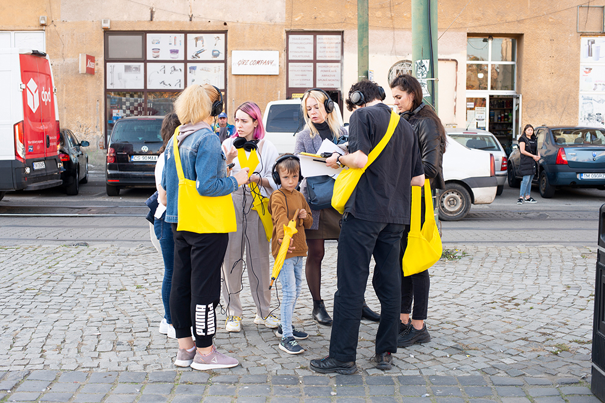
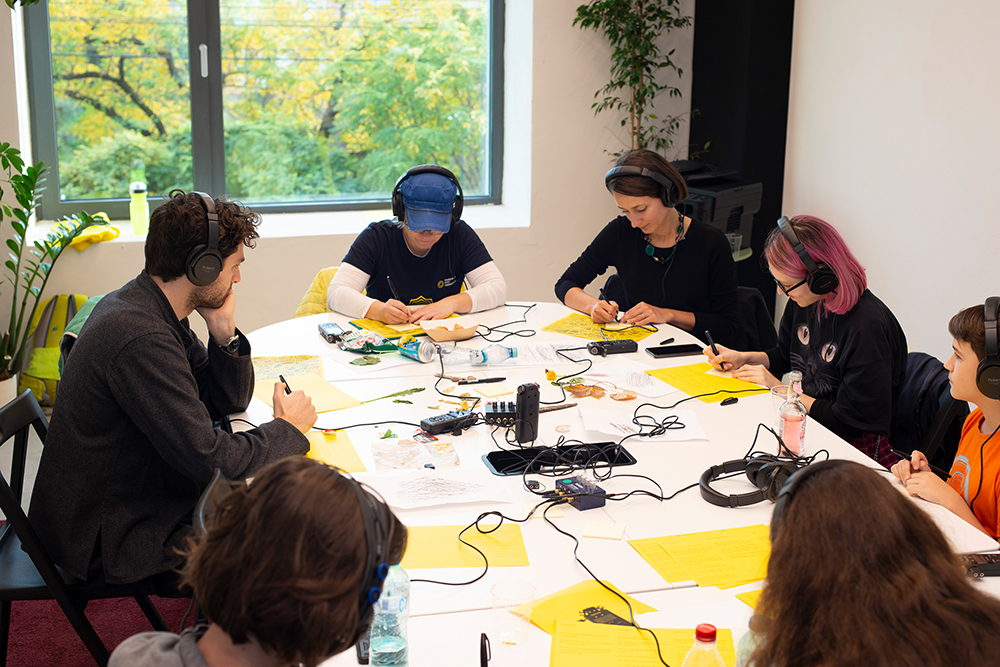
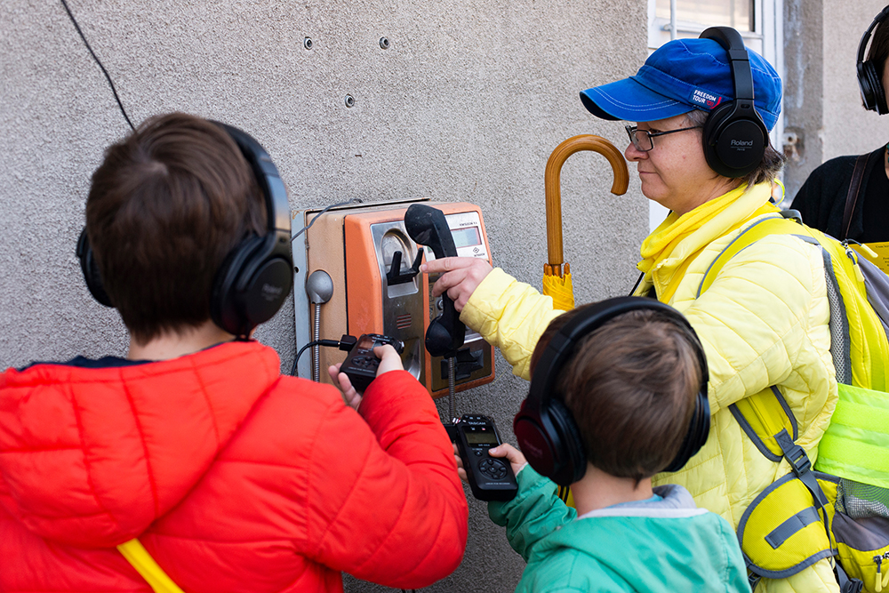
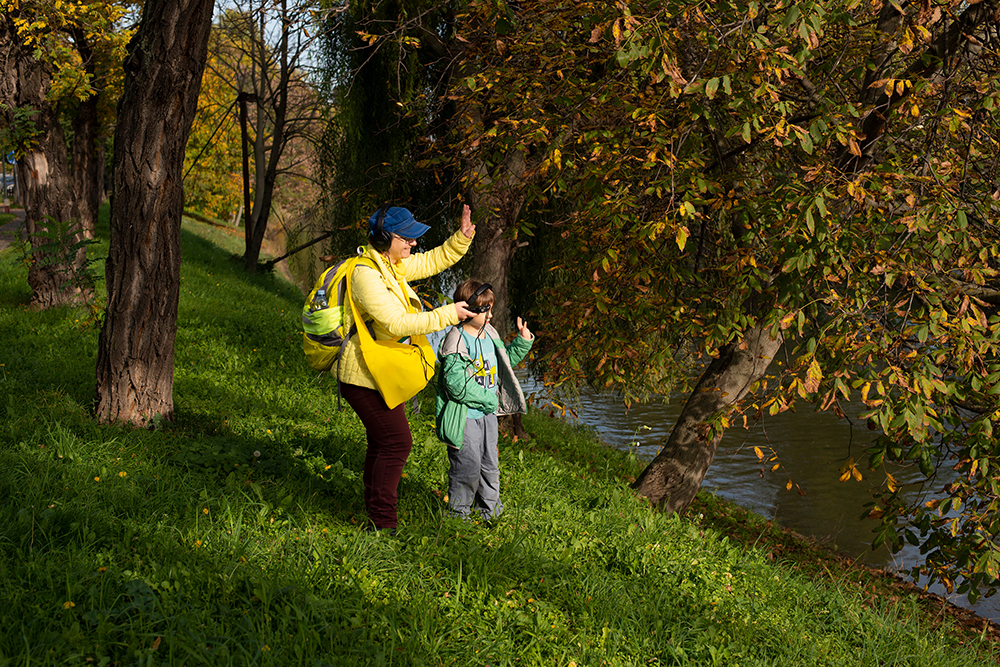
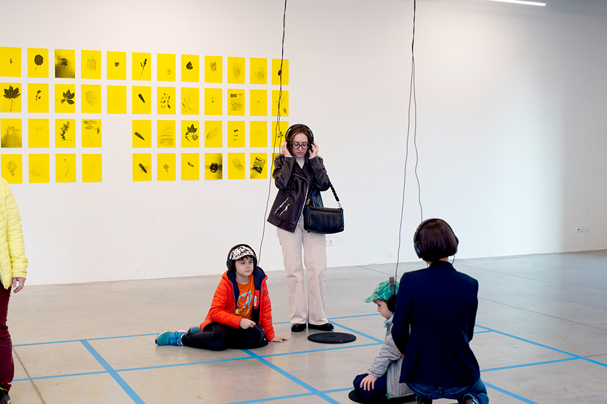
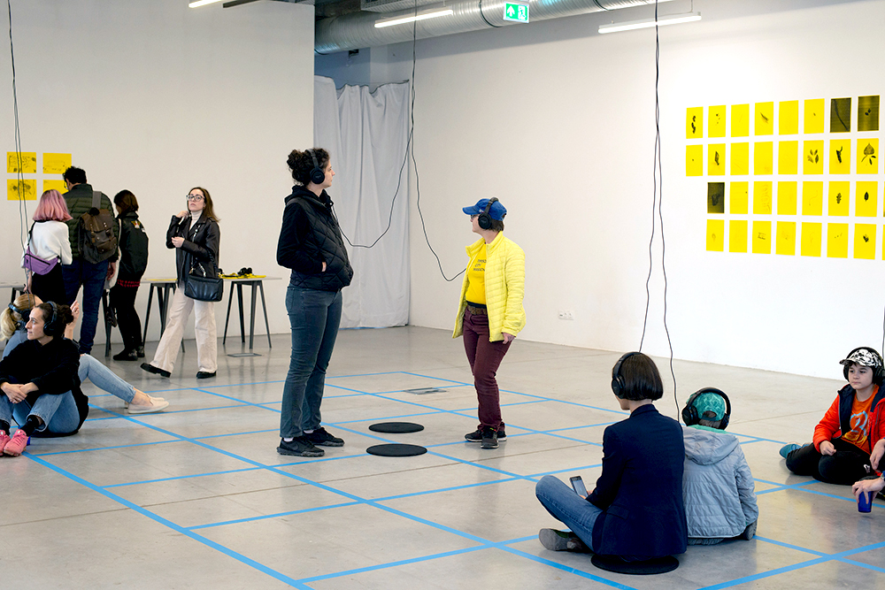
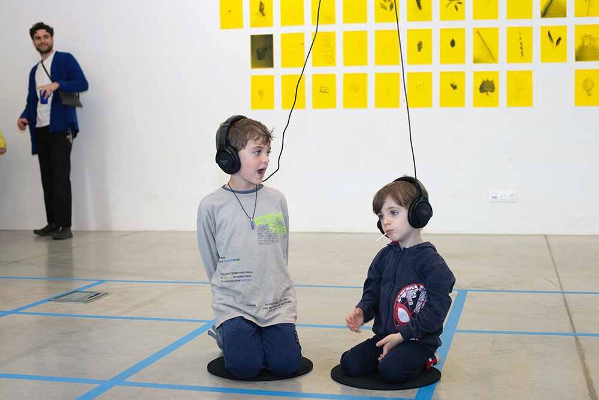
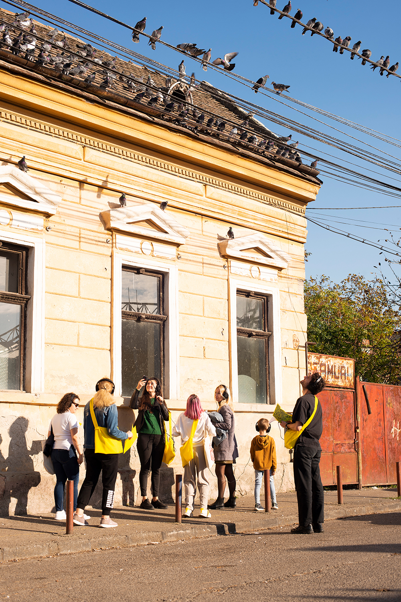

City Sound Walks
I was invited by FABER & Martina Muzi to create a workshop and exhibition that would help to connect refugees from Ukraine with the city of Timișoara and the people already living there. I devised a series of sound walks from which we collectively explored Timisoara through sound; using the recordings and objects gathered to create an alternative map of the city together.
Date 2022
at FABER,Timișoara, Romania
With thanks to Martina Muzi.







